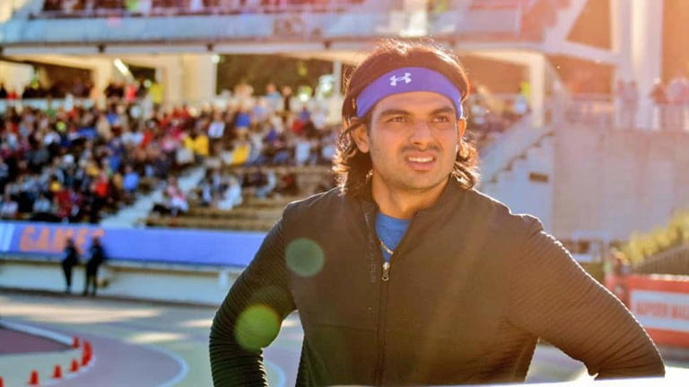

he Commonwealth Games 2022 will get underway in Birmingham from July 28 with the games coming to a
close on August 8. India finished third on the medals table in CWG 2018 with 26 gold, 20 silver and 20 bronze
behind leaders Australia and England.

The names of National Congress Party chief Sharad Pawar, West Bengal governor and diplomat Gopal Krishna
Gandhi and National Conference leader Farooq Abdullah were proposed first, but they turned down the offer.
TMC insiders said Sinha was considered as he is big name with pan-India acceptance.
Some believe that Sinha also has some influence in the Bharatiya Janata Party (BJP). He was active in politics
in Bihar as well as in Delhi.
THE CALL
Sources said on Monday evening, seniors of the Opposition camp had a chat on the name. When Sinha was
approached, he agreed after which a decision was taken.
With the Birmingham Games scheduled to be held from July 28, the qualification and team selection processes
are still ongoing. Here's a list of Indian sportpersons who have qualified for the Commonwealth Games 2022 till
now...
Athletics
India named a 37-member athletics squad for the Birmingham Commonwealth Games including Neeraj Chopra, Dutee Chand
and Hima Das.
This Desktop App Helps You Write More Effectively
Ad
Grammarly
This Desktop App Helps You Write More Effectively
Avinash Sable - men's 3000m steeplechase
Nitender Rawat - men's marathon
M Sreeshankar - men's long Jump
Muhammed Anees Yahiya - men's long Jump
Abdulla Aboobacker - men's triple jump
Praveen Chithravel - men's triple jump
Eldhose Paul - men's triple jump
Tajinderpal Singh Toor - men's shot put
Neeraj Chopra - men's javelin throw
DP Manu - men's javelin throw
Rohit Yadav - men's javelin throw
Sandeep Kumar - men's 10km race walk
Amit Khatri - men's 10km race walk
Amoj Jacob - men's 4x400m relay
Noah Nirmal Tom - men's 4x400m relay
Arokia Rajiv - men's 4x400m relay
Muhammed Ajmal - men's 4x400m relay
Naganathan Pandi - men's 4x400m relay
Rajesh Ramesh - men's 4x400m relay
Dhanalakshmi Sekar - women's 100m and 4x100m relay
Jyothi Yarraji - women's 100m hurdles